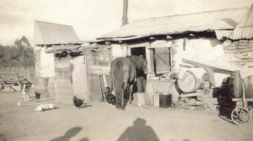

John Oscar and jane Stait

![John Oscar Stait was variously a miner, farmer and teamster. All of the Staits were good horsemen and women and John Oscar was no exception.
He was a general carrier and kept his own team of horses which he drove over the Blue Mountains. He also drove for Cobb & Co. on the Bathurst run some time between 1865 and 1880. The coach drivers were required to manage a separate rein for each horse. They had to remember every steep decline, sharp corner, heavy bog and winding path along the route, which had to be to negotiated in all weathers and at night. He also ran a small farm and spent time prospecting on the Turon River and around the area. He discovered the Sunny Corner Mine.](John_Oscar_and_Jane_Stait_files/shapeimage_1.png)
What you should know
Jane Thompson
Jane Thompson was born at Piper’s Flat on the 28th June 1845. She was Hannah’s 9th child. Jane married John Oscar Stait on the 1st November 1865 when she was 20. Jane gave birth to 12 children and Oscar Ernest was her last born child. Jane died at the Coast Hospital, Little Bay on 30 September 1922 from ovarian cancer and pneumonia. She was buried in the Portland Cemetery on 2 October 1922.
John oscar stait
John Oscar Stait was born in Parramatta, NSW on 8 October 1841. He was the 2nd of 8 children born to Richard Stait and Sarah McManus. Richard was a convict from Tewkesbury, Gloucestershire and died 2 years after John Oscar’s birth. John Oscar married Jane Thompson on the 1st November 1865 In Sydney. They lived at Sunny Corner, Piper’s Flat and on the Williewa at Portland. He died on the Williewa on the 5 Oct 1920.
What I know

This is the neighbour Alfred Chadwick’s house on the Williewa in 1927 and I imagine John Oscar and Jane’s house was similar. The Chaddies were related by marriage to the Kates one of whom John Oscar partnered in the Sunny Corner Lease.


A mail coach change station. Courtesy of the Powerhouse Museum. Sydney, ca. 1880
Death of an Old Resident
October 1920 , Lithgow or Portland, N.S.W., Australia
The death occurred on Tuesday at his residence on the Williewa, of Mr John Oscar Stait, a very old and highly respected resident. Deceased was a native of Parramatta where he was born on October 8, 1841, and was married in Sydney in November 1865. Coming to Portland about 65 years ago he resided for a time at Meadow Flat, from which place he went to Sunny Corner, where he worked for 25 years. He and his two brothers were the founders of Sunny Corner Mines. It was here that deceased worked a small farm, while his two brothers prospected. Having had some success, they went away for a few weeks, and on their return found their claim had been jumped by other prospectors, and as they had been more than 14 days away, they lost their claim. One brother is still living in Sunny Corner on the farm. For many years before the construction of the railway, he drove teams over the mountains, and for some years was employed by Cobb and Co. His later life was spent in the Portland district, having resided on the Williewa for about 41 years. During this period he was occupied in prospecting and digging on the Turon and other parts of the district. For the past seven and a half years he has been an invalid. Deceased was an interesting personality and could tell many a good tale about old times. He was in Portland in the early days of the lime industry, when lime was burned in small square holes in the ground, and had to be taken to 'Wang by teams. He has left a widow and a family of five sons and four daughters, most of whom reside in Portland and district. His two sons, George and Oscar, reside in Lithgow, one daughter in Newtown, and another at Emu Plains. His grand-children number 44, and great-grandchildren 7. The funeral took place on Thursday, and was largely attended. The remains were interred in the Portland cemetery. Much sympathy is expressed to the bereaved.
Register of auriferous leases NSW
Stait, John Oscar. Sunny Corner 25. Register 885. 20th August 1894. Other names : Kates


Sunny Corner Silver mine.
Courtesy of the Powerhouse Museum.
Turon.jpg)